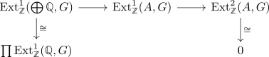

Q criterion for cotorsion groups
Proposition
Let $G$ be an abelian group TFAE:
- $G$ is a cotorsion module
- $\mathrm{Ext}_\mathbb{Z}^1(\mathbb{Q}, G) = 0$
Proof
1) $\implies$ 2)
special case
2) $\implies$ 1)
Let $A$ be a flat module, in particular torsion-free (cf. flat module as torsion free module). Then there exists an embedding $A \hookrightarrow \bigoplus \mathbb{Q}$ (cf. embedding of a torsion free group into a sum of Q) and passing to the long exact sequence of Ext for $A \hookrightarrow \bigoplus \mathbb{Q} \rightarrow (\bigoplus \mathbb{Q})/A$ shows

hence $\prod \mathrm{Ext}_{\mathbb{Z}}^1(\mathbb{Q}, G) \twoheadrightarrow \mathrm{Ext}_{\mathbb{Z}}^1(A, G)$ surjects onto $\mathrm{Ext}_{\mathbb{Z}}^1(A, G)$.